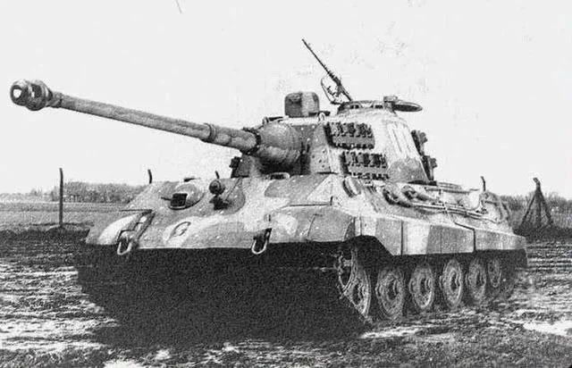

Tiger II (King Tiger)
Giới thiệu
Tiger II, thường được gọi là King Tiger, là xe tăng hạng nặng mạnh nhất được Đức đưa vào sản xuất hàng loạt trong Thế chiến II. Xe kết hợp giáp trước nghiêng rất dày với pháo 88 mm nòng dài.
Hỏa lực của Tiger II có thể tiêu diệt phần lớn xe tăng Đồng Minh ở cự ly xa, nhưng trọng lượng lớn khiến khả năng cơ động và độ tin cậy bị hạn chế.
Lịch sử phát triển
Tiger II bắt đầu được đưa vào chiến đấu năm 1944. Thiết kế chịu ảnh hưởng từ Panther ở phần giáp nghiêng, đồng thời sử dụng pháo 8,8 cm KwK 43 L/71 có sơ tốc rất cao.
Xe xuất hiện tại Normandy, Mặt trận phía Đông, chiến dịch Ardennes và các trận phòng thủ cuối chiến tranh. Số lượng sản xuất thấp nên ảnh hưởng chiến lược bị giới hạn.
Thông số kỹ thuật
| Quốc gia | Đức |
|---|---|
| Phân loại | Xe tăng hạng nặng |
| Tên đầy đủ | Panzerkampfwagen Tiger Ausf.B |
| Thời gian phục vụ | 1944–1945 |
| Kíp lái | 5 người |
| Khối lượng | Khoảng 69,8 tấn |
| Động cơ | Maybach HL230 P30 V12 |
| Công suất | Khoảng 700 mã lực |
| Tốc độ tối đa | Khoảng 41 km/h |
| Tầm hoạt động | Khoảng 120–170 km |
| Giáp | Khoảng 40–185 mm |
Vũ khí
- Pháo chính 8,8 cm KwK 43 L/71.
- Hai súng máy MG34 cỡ 7,92 mm.
- Cơ số đạn pháo thường từ 80 đến 86 viên tùy loại tháp pháo.
Ưu điểm
- Pháo chính có khả năng xuyên giáp rất mạnh.
- Giáp trước dày và bố trí nghiêng hiệu quả.
- Tầm quan sát và khả năng chiến đấu từ xa tốt.
Nhược điểm
- Khối lượng gần 70 tấn gây áp lực lớn lên động cơ và truyền động.
- Tốc độ thực tế và khả năng vượt địa hình bị hạn chế.
- Tiêu thụ nhiên liệu cao và khó cứu kéo khi hỏng.
- Sản xuất ít, không đủ tạo ảnh hưởng chiến lược lớn.
Các trận đánh và chiến dịch tiêu biểu
Normandy năm 1944
Tiger II được triển khai để chống lại các lực lượng Đồng Minh sau cuộc đổ bộ Normandy.
Chiến dịch Ardennes
Nhiều Tiger II tham gia cuộc phản công cuối năm 1944 nhưng bị hạn chế bởi đường sá, nhiên liệu và hỏng hóc.
Mặt trận phía Đông
Xe tham chiến tại Ba Lan, Hungary và trong các trận phòng thủ hướng về Đức.
Đánh giá tổng quan
Tiger II là một xe tăng có sức mạnh hỏa lực và phòng vệ rất cao, đặc biệt trong chiến đấu tầm xa.
Tuy nhiên, độ phức tạp, trọng lượng và nhu cầu hậu cần khiến nó khó phát huy hiệu quả trong điều kiện Đức cuối chiến tranh.